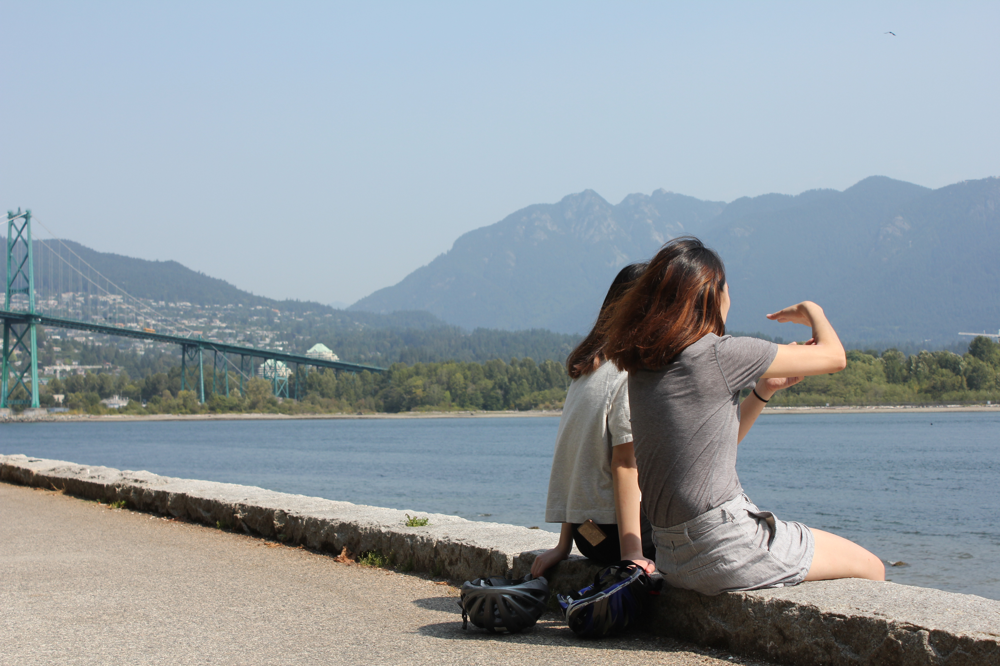
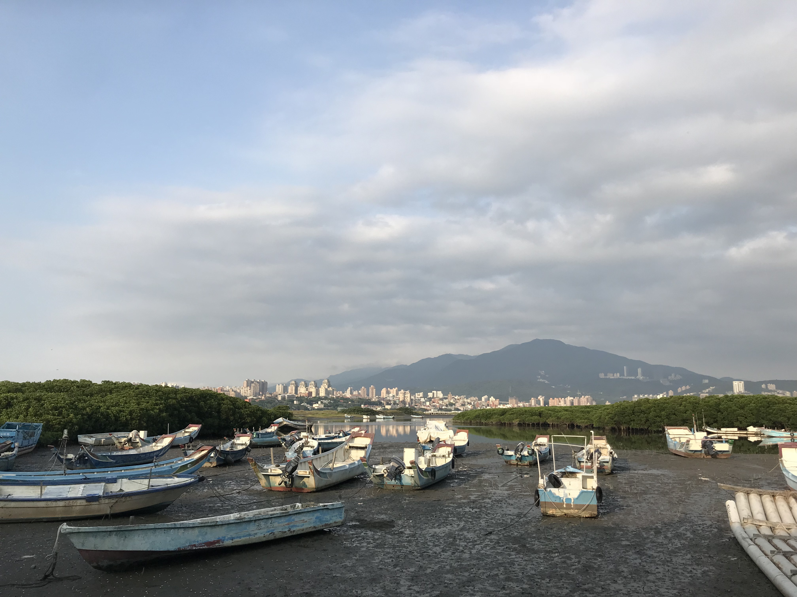

Blog
A Blossomed Friendship

----------------
October 2018Visiting Chicago has always been a family affair. This past fall, I traveled to Chicago for the first time without my parents/siblings and with one of my closest friends to visit our friends working and living in Chicago. Read More...
Tags: Chicago, Midwest, United States
I Fell In Love, Hard
----------------
July/August 2018I had never been to the Pacific Northwest before and had only heard about the drizzling rain in Seattle and high rent in Vancouver through the grapevine. After two weeks traveling around Vancouver, Victoria Island, and Seattle, I fell hard for the Pacific Northwest, its seafood, and beautiful evergreens. Read More...
Tags: Seattle, Vancouver, Victoria Island, United States, Canada, Pacific Northwest
New Memories in Familiar Spaces
----------------
May 2018
For those that know me, Taiwan is my second home. I've gone more than ten times over the course of my life and stay there for at least a month at a time visitng my extended family and family friends. Come with me on my first trip traveling with a friend internationally and to my family's home of Taiwan. Read More...
Tags: Taipei, Taiwan